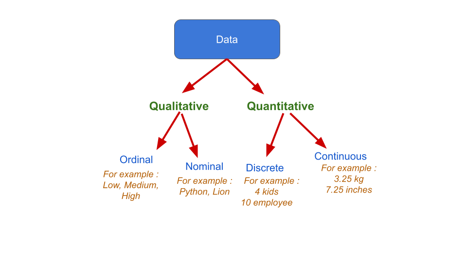

1 Understanding the World with Data
1.1 Apa itu Data?
Data adalah informasi tentang individu/objek/unit observasi dalam bentuk angka, teks, gambar, atau sinyal yang dianalisis untuk menjawab pertanyaan penelitian atau bisnis.
Definisi merujuk Agresti Statistics: The Art and Science of Learning from Data.
1.1.1 Contoh Data dalam Kehidupan Sehari-hari
1. Data Tabel (Structured Data) 
Contoh tabel di atas menunjukkan data mahasiswa dengan variabel:
- Name: data nominal (kategori tanpa urutan)
- Gender: data nominal (Male/Female)
- Height: data kontinu (dapat diukur dengan presisi tinggi)
- Weight: data kontinu (berat badan dalam kg)
- Religion: data nominal (kategori kepercayaan)
- Age: data diskret (usia dalam tahun penuh)
2. Data Visual/Gambar (Unstructured Data) 
Gambar burung ini adalah data unstructured yang bisa dianalisis untuk:
- Klasifikasi spesies menggunakan machine learning
- Analisis perilaku hewan
- Penelitian biodiversitas
1.1.2 Klasifikasi Tipe Data

1.1.2.1 Data Kualitatif (Categorical)
1. Nominal: Kategori tanpa urutan natural
- Contoh: Warna (merah, biru, hijau), Jenis kelamin (L/P), Agama
- Tidak bisa diurutkan atau diberi ranking
- Hanya bisa dihitung frekuensinya
2. Ordinal: Kategori yang bisa diurutkan
- Contoh: Tingkat pendidikan (SD < SMP < SMA < S1), Rating kepuasan (tidak puas < cukup < puas < sangat puas)
- Bisa diurutkan tapi jarak antar kategori tidak sama
- Dapat menggunakan median sebagai ukuran tengah
1.1.2.2 Data Kuantitatif (Numerical)
3. Diskret: Hitungan bilangan bulat
- Contoh: Jumlah anak (0, 1, 2, 3, …), Jumlah karyawan, Jumlah produk terjual
- Tidak bisa berupa pecahan
- Hasil dari menghitung (counting)
4. Kontinu: Bilangan riil pada rentang tertentu
- Contoh: Tinggi badan (170.5 cm), Berat (65.7 kg), Suhu (25.3°C)
- Bisa berupa pecahan dengan presisi tak terbatas
- Hasil dari mengukur (measuring)
1.1.3 Skala Pengukuran

1.1.3.1 Skala Interval
- Selisih antar nilai bermakna dan konsisten
- Titik nol tidak absolut (arbitrary zero point)
- Contoh: Suhu Celsius (0°C tidak berarti “tidak ada suhu”)
- Operasi: penjumlahan dan pengurangan valid
- Tidak bisa menghitung rasio (20°C bukan 2x lebih panas dari 10°C)
1.1.3.2 Skala Rasio
- Selisih dan rasio antar nilai bermakna
- Memiliki titik nol absolut (true zero point)
- Contoh: Tinggi badan, berat, pendapatan, jarak
- Operasi: semua operasi matematika valid
- Bisa menghitung rasio (berat 60kg adalah 2x dari 30kg)
1.1.4 Data Tidak Terstruktur (Unstructured Data)

Karakteristik:
- Tidak mengikuti format tabel yang terorganisir
- Memerlukan teknik khusus untuk analisis
- Volume sangat besar (big data)
Contoh dan Aplikasi:
- Teks: Review produk, media sosial, dokumen → Sentiment analysis, topic modeling
- Audio: Rekaman suara, musik → Speech recognition, music classification
- Video: Film, surveillance → Object detection, behavior analysis
- Gambar: Foto produk, medical imaging → Image classification, medical diagnosis
1.2 Apa itu Statistika?
“Statistics is the art and science of learning from data.” — Agresti
Statistika adalah ilmu yang mencakup pengumpulan, peringkasan, pemodelan, dan inferensi dari data untuk membuat keputusan yang berdasar bukti.
1.2.1 Interpretasi Visual Data
Contoh 1: Rating Produk E-commerce .png)
Dari grafik ulasan pembeli di atas:
- 4.8/5.0: Rating rata-rata sangat tinggi
- 100% pembeli merasa puas: Indikator kualitas produk excellent
- 12 rating, 10 ulasan: Sample size cukup untuk validitas
- Distribusi rating: Mayoritas 5 bintang (10), sedikit 4 bintang (2)
- Interpretasi bisnis: Produk berkualitas tinggi, customer satisfaction excellent
Contoh 2: Data Demografi iPhone .png)
Data spesifikasi produk teknologi:
- Processor: Apple A18 Chip (data nominal - jenis processor)
- Storage: 128GB (data diskret - kapasitas penyimpanan)
- Battery: 3561mAh (data kontinu - kapasitas baterai)
- Camera: 48MP main, 12MP front (data diskret - resolusi kamera)
- Screen: 6.1” Super Retina XDR OLED (data kontinu - ukuran layar)
1.2.2 Cabang Utama Statistika
1.2.2.1 1. Statistika Deskriptif
Tujuan: Meringkas dan menampilkan data Metode:
- Tabel: Distribusi frekuensi, crosstab
- Grafik: Histogram, boxplot, scatter plot, pie chart
- Ukuran numerik: Mean, median, modus, standar deviasi, range
Contoh Aplikasi:
- Dashboard penjualan bulanan
- Profil demografis pelanggan
- Rangkuman kinerja karyawan
1.2.2.2 2. Statistika Inferensial
Tujuan: Membuat kesimpulan tentang populasi berdasarkan sampel Metode:
- Estimasi: Point estimate, confidence interval
- Uji Hipotesis: t-test, chi-square test, ANOVA
- Regresi: Memprediksi hubungan antar variabel
Contoh Aplikasi:
- Survei politik: Prediksi hasil pemilu dari sample
- Quality control: Menentukan produk memenuhi standar
- A/B Testing: Membandingkan efektivitas dua strategi marketing
1.2.3 Contoh Penerapan dalam Konteks Pendidikan

Analisis Statistik pada Data Pendidikan:
Statistika Deskriptif:
- Jumlah sekolah per provinsi (data diskret)
- Distribusi jenjang pendidikan (data ordinal: SD < SMP < SMA)
- Rasio guru-siswa per daerah (data rasio)
Statistika Inferensial:
- Estimasi kebutuhan guru nasional dari data sampel daerah
- Uji hipotesis: Apakah rasio guru-siswa berbeda signifikan antar provinsi?
- Prediksi pertumbuhan jumlah sekolah 5 tahun ke depan
1.3 Probabilitas: Kerangka Mengukur Ketidakpastian
Probabilitas adalah sistem matematis untuk mengkuantifikasi dan menganalisis ketidakpastian dalam berbagai fenomena.
1.3.1 Aplikasi dalam Kehidupan Sehari-hari
1. Prediksi Cuaca
- “60% kemungkinan hujan” = P(Hujan) = 0.6
- Berdasarkan data historis pola cuaca serupa
- Membantu perencanaan aktivitas outdoor
2. Diagnosa Medis
- “Terapi ini memiliki 80% tingkat kesembuhan”
- Berdasarkan data klinis dari pasien sebelumnya
- Membantu dokter dan pasien membuat keputusan treatment
3. Investasi Keuangan
- “Portfolio ini memiliki risiko 15% mengalami kerugian”
- Berdasarkan analisis historis pergerakan pasar
- Membantu investor mengelola risiko
4. Industri Asuransi
- Menghitung premi berdasarkan probabilitas klaim
- Data historis kecelakaan, kesehatan, bencana
- Menentukan tarif yang profitable namun kompetitif
1.3.2 Peran Krusial dalam Statistika
1.3.2.1 1. Dasar Teoritis Inferensi
- Sampling distribution: Bagaimana statistik sampel terdistribusi
- Central Limit Theorem: Distribusi mean sampel mendekati normal
- Confidence interval: Rentang nilai parameter populasi yang mungkin
1.3.2.2 2. Uji Hipotesis
- P-value: Probabilitas mendapat hasil ekstrem jika H₀ benar
- Type I error: Probabilitas menolak H₀ padahal benar (α)
- Type II error: Probabilitas menerima H₀ padahal salah (β)
- Power: Probabilitas menolak H₀ padahal salah (1-β)
1.3.2.3 3. Kuantifikasi Ketidakpastian
- Standard error: Ukuran variabilitas estimasi
- Margin of error: Rentang ketidakpastian dalam estimasi
- Prediction interval: Rentang nilai prediksi individual
Contoh Lengkap - Survei Preferensi Produk:
Data: Survei 1.000 responden, 650 orang (65%) menyukai produk A
Statistika Deskriptif:
- Proporsi sampel = 650/1000 = 0.65 (65%)
Statistika Inferensial dengan Probabilitas:
- Estimasi proporsi populasi = 65%
- Standard error = √[0.65(1-0.65)/1000] = 0.015
- 95% Confidence Interval = 65% ± 1.96(1.5%) = (62.1%, 67.9%)
Interpretasi: “Dengan tingkat kepercayaan 95%, proporsi populasi yang menyukai produk A berada antara 62.1% hingga 67.9%”
1.3.2.4 4. Pengambilan Keputusan Berbasis Data
- Decision theory: Memilih tindakan optimal dengan ketidakpastian
- Expected value: Nilai harapan dari berbagai skenario
- Risk assessment: Evaluasi probabilitas dan dampak risiko
Contoh Aplikasi Bisnis:
- Marketing: A/B testing dengan confidence interval
- Finance: Value at Risk (VaR) menggunakan probabilitas kerugian
- Operations: Quality control dengan sampling inspection
- HR: Prediksi turnover karyawan berdasarkan data historis
1.4 Referensi
- Agresti, A., Franklin, C., Klingenberg, B. (2018). Statistics: The Art and Science of Learning from Data. Pearson.
- Mendenhall, W., Beaver, R. J., Beaver, B. M. (2013). Introduction to Probability and Statistics (14th ed.). Brooks/Cole.
- Ott, R. L., Longnecker, M. (2010). An Introduction to Statistical Methods and Data Analysis (6th ed.). Brooks/Cole.
- Lohr, S. L. (2010). Sampling: Design and Analysis (2nd ed.). Brooks/Cole.
- Scheaffer, R. L., Mendenhall, W., Ott, L., Gerow, K. G. (2012). Elementary Survey Sampling (7th ed.). Brooks/Cole.